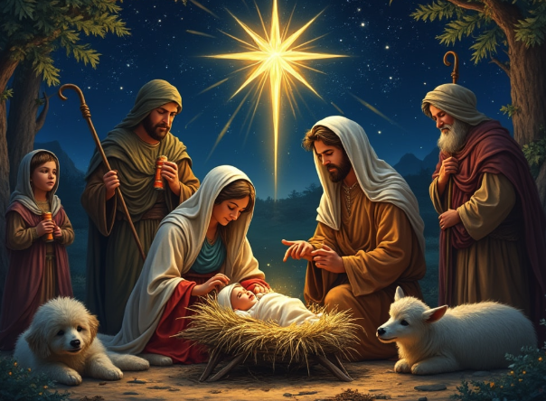

Christmas is an annual festival commemorating the birth of Jesus Christ, observed primarily on December 25[a] as a religious and cultural celebration among billions of people around the world. A liturgical feast central to Christianity, Christmas preparation begins on the First Sunday of Advent and it is followed by Christmastide, which historically in the West lasts twelve days and culminates on Twelfth Night. Christmas Day is a public holiday in many countries, is observed religiously by a majority of Christians, as well as celebrated culturally by many non-Christians, and forms an integral part of the annual holiday season.
The customs associated with Christmas in various countries have a mix of pre-Christian, Christian, and secular themes and origins. Popular holiday traditions include gift giving; completing an Advent calendar or Advent wreath; Christmas music and caroling; watching Christmas movies; viewing a Nativity play; an exchange of Christmas cards; attending church services; a special meal; and displaying various Christmas decorations, including Christmas trees, Christmas lights, nativity scenes, poinsettias, garlands, wreaths, mistletoe, and holly.
Additionally, several related and often interchangeable figures, known as Santa Claus, Father Christmas, Saint Nicholas, and Christkind, are associated with bringing gifts to children during the Christmas season and have their own body of traditions and lore. Because gift-giving and many other aspects of the Christmas festival involve heightened economic activity, the holiday has become a significant event and a key sales period for retailers and businesses. Over the past few centuries, Christmas has had a steadily growing economic effect in many regions of the world.
| Fun Fact. | Location |
|---|---|
| The term ‘Xmas’ comes from Greece, X is the Greek symbol for Christ | Greece |
| On Christmas Day in Japan, fried chicken is the most commonly eaten food | Japan |
| The world’s tallest Christmas tree was 221ft high and was displayed in a Washington shopping mall in 1950 | USA |
| The most lights lit at the same time on one Christmas was 194,672 in Belgium in 2010 | Belgium |
| The amount of wrapping paper used in the UK alone each Christmas is enough to cover the island of Guernsey! | United Kingdom |
| The first ever Christmas tree wasn’t a tree at all, it was in fact made of dyed goose feathers and came from Germany | Germany |